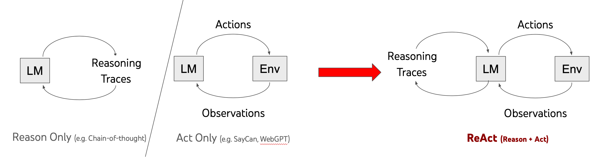
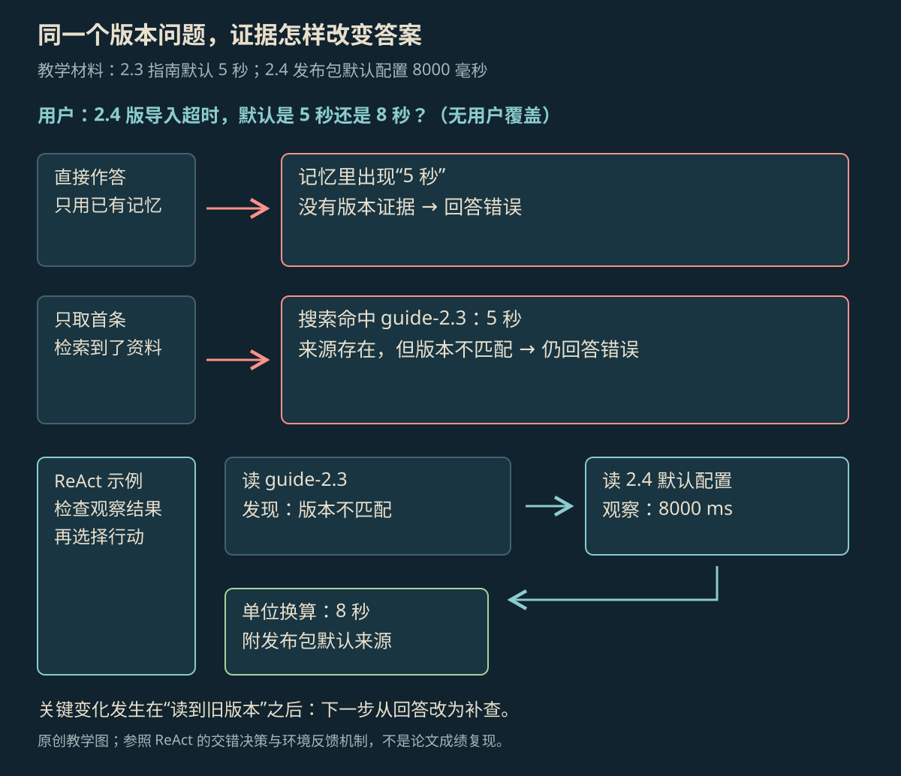

REASONING + ACTING
ReAct 框架原理
AI 先决定下一步，再用工具查资料或做事；拿到工具返回的结果后，继续决定做什么。这篇解释 Thought、Action、Observation，以及它们怎样连成一个循环。
本页目录
ReAct 怎样工作#
ReAct 是一种让 AI 一边决定下一步、一边使用工具的方法。AI 先根据已有信息决定查什么或做什么，工具返回结果后，再据此决定下一步，直到得到答案或停止。这一方法由 Yao 等人于 2022 年提出，发表于 ICLR 2023。[1]
它处理的是“新信息怎样影响下一步”这个问题。AI 只对已有文字继续分析，不能凭空知道外部发生了什么；用了工具却没有把结果交回来，也无法根据结果调整。ReAct 把查资料、理解结果和继续行动连在一起。
Thought、Action 与 Observation#
| 组成 | 由谁产生 | 作用 |
|---|---|---|
| Thought：分析下一步 | 模型 | 把问题拆开、理解工具结果、找出还缺什么、调整下一步 |
| Action：行动 | AI 提出；应用或工具执行 | 搜索、读资料、操作对象，或请求结束 |
| Observation：工具返回结果 | 工具或环境 | 返回读到的资料、做事结果或错误 |
三个部分连起来，就是“先想下一步 → 用工具做 → 看工具结果 → 再决定”。下面用符号简写：hₜ 是任务和此前的执行记录，AI 据此选择行动 aₜ；工具执行后返回 oₜ。下一轮会把这次行动和返回结果也放进输入。因此，下一次行动 aₜ₊₁ 可以因为 oₜ 而改变。不把新结果交回来，AI 就无法根据这次操作调整。[1]

放大查看 ↗作者图左侧只画了 AI 自己分析的过程，中间只画了使用工具并接收结果的过程，右侧把两者连在一起。工具返回的箭头带来新资料，AI 再分析这些资料、决定接下来做什么。ReAct 不要求每次行动前都分析同样久：问答任务可能经常停下来核对资料，也有任务会连续做几个动作。[2]
论文示例把 Thought 也写在提示词和执行记录里，让人看见分析过程。现在的系统可以把详细分析留在模型内部，只把工具请求和简短的决定理由交给应用。让 AI 根据工具结果继续做事，并不要求公开全部内部推理。
提示词与完整执行记录#
原始方法会在提示词里放几个完整例子，让模型看到怎样根据工具结果继续做事。这叫少样本提示。除了问题，提示词还要写明可用工具、参数和执行记录。下面用虚构的版本资料演示；它不依赖某个开发工具包（SDK），也不是一次真实模型测试的记录。
任务：核对 2.4 版导入超时的默认值，并给出来源。
工具：search_docs(query)、read_config(version)、finish(answer, source)。
约束：版本必须匹配；缺少证据时继续查找或说明资料不足。
工具返回后，基于新观察选择下一步。Thought 1（决策摘要）：需要找到 2.4 版的默认值。
Action 1：search_docs("2.4 导入超时 默认值")
Observation 1：命中 guide-2.3，写有默认 5 秒。
Thought 2（决策摘要）：版本不匹配，改查 2.4 发布包默认配置。
Action 2：read_config("2.4")
Observation 2：version=2.4；kind=release_default；
request_timeout_ms=8000；没有用户覆盖项。
Thought 3（决策摘要）：证据匹配；8000 毫秒换算为 8 秒。
Action 3：finish("默认 8 秒", "2.4 发布包默认配置项")第一份结果虽来自官方指南，却对应旧版本，不能回答当前问题。因此第二次不再重复搜索，而是去读新版配置。最后的 finish 表示结束并交出答案，不需要再编一条工具返回结果。
核对版本的例子#
例子里只有两份事先设定的资料：2.3 指南写 5 秒；2.4 发布包的默认配置为 request_timeout_ms=8000，没有用户自行修改的覆盖值。下图比较三种做法：直接回答、搜到资料就回答、发现问题后继续查。

放大查看 ↗| 时刻 | 实际查到什么 | 根据资料能知道什么 |
|---|---|---|
| t1 | guide-2.3：默认 5 秒 | 只证明 2.3 的设置；2.4 仍未知 |
| t2 | 2.4 发布包默认配置：8000；键名含 ms | 已得到 2.4 默认值与单位 |
| t3 | 8000 / 1000 = 8 | 可回答 8 秒，并引用发布包默认配置 |
关键发生在 t1 之后：搜到了资料，不代表已经解决问题。AI 还要对比用户问的版本和资料版本。第二份资料若也没写版本，就需要继续核对或说明资料不足。即使碰巧答对了 8 秒，也不能证明查证过程可靠。
用 Python 模拟查资料的过程#
下面的 Python 用写死的规则模拟查询过程：发现版本不对，就换一份资料。它没有调用模型，因此只能展示工具结果怎样改变下一步，不能用来评价模型有多聪明。
docs = {
"guide": {"version": "2.3", "timeout_s": 5},
"config": {
"version": "2.4", "kind": "release_default",
"request_timeout_ms": 8000,
},
}
target = "2.4"
evidence = docs["guide"]
print("first observation:", evidence)
if evidence["version"] != target:
evidence = docs["config"] # 观察改变了下一次读取目标
assert evidence["version"] == target
assert evidence["kind"] == "release_default"
seconds = evidence["request_timeout_ms"] / 1000
print({"version": target, "timeout_s": seconds, "source": "config"})这段代码把版本检查写成了 if；真实 Agent 通常让模型选择下一次工具请求，再由应用执行并把结果交回来。两种做法都有同一个前提：没有读到第二份资料，就不该提前使用其中的值。请求、执行和返回结果怎样接起来，见 Tool Calling。[3]
与 CoT、工具调用和 Agent Loop 的区别#
给 AI 一个搜索工具，只表示它能搜索。ReAct 还要让它用搜索结果决定接下来做什么。在这个例子中，搜索一次就结束，只用到了工具；发现结果属于旧版本、再改查新版配置，才用到了结果带来的反馈。
| 方法 | 这个案例里解决了哪部分 | 仍缺什么 |
|---|---|---|
| CoT | 分析版本和单位换算 | 没有外部资料，继续分析也无法补出事实 |
| Tool Calling | 发出并执行一次查资料请求 | 工具结果之后怎样继续 |
| ReAct | 根据版本冲突改变下一次动作 | 执行权限、中断恢复和额度限制 |
| Agent Loop | 保存任务进度，管理继续和停止 | 怎样用资料判断这项任务已经完成 |
Google Research 的作者解读也说明了这两个方向：分析已有信息，有助于调整行动计划；实际行动，又把外部信息带回来。[4] 因此，ReAct 可以用不同的程序或框架实现，不是某个软件类名的别称。
资料错误与重复查询#
如果工具返回的配置把版本标错，AI 仍可能沿着错误资料得出错误结论。ReAct 让新信息进入下一步，但不保证资料本身真实。搜索质量、版本说明和访问权限仍会影响结果。
另一个常见问题是反复做同样的事：同一查询一直返回旧文档，却没有带来新资料。程序可以对比文档 ID、版本和内容哈希；哈希是根据内容算出的识别值。发现结果重复后，再决定换来源、改查询条件或停止。只限制最多做几步能防止一直重试，却不能解释这些步骤为什么没有用。
怎样检查任务是否完成#
这个问题答完，需要同时满足三点：值确实来自 2.4 发布包默认配置；单位换算正确；引用能找到具体配置项。缺一项就仍未完成。测试可以分别安排旧指南排在首位、删掉新版配置、把单位改成秒，检查 AI 是否会核对版本、说明资料不足和正确换算。
这些检查直接看资料和结果，比让 AI 反复说“我需要核实”更容易判断是否完成。Agent Loop 继续说明：工具请求已经发出，程序却在中间停了，之后怎样接着做。
参考资料
论文、官方文档与案例依据。
- [1]ReAct: Synergizing Reasoning and Acting in Language Models ↗
Yao et al.；2022 首次提交，ICLR 2023。用于论文定义与研究范围。
- [2]ReAct 作者项目页 ↗
原始轨迹示例、论文与代码入口。
- [3]Tool use with Claude ↗
官方工具调用文档；用于说明调用请求、执行及回传的边界。
- [4]Google Research：ReAct 作者解读 ↗
2022-11-08 作者文章；说明推理与环境反馈的协同。